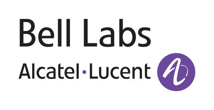

+1 408 809 5598
Christian Fritz
Savioke Inc. — 125 S Market Street, Suite 700 — San Jose, CA 95113-2282
Development Background
meteor
node.js
ros
git
c/c++
javascript
html
css
java
python
prolog
shell-scripting
linux
Research Background
planning
execution monitoring
golog
cognitive robotics
knowledge representation
user preferences
I am a tech-lead and full-stack artificial intelligence developer. I have experience leading teams of up to 12 researchers and software engineers but am hands-on and have experience along the entire robotics stack from sensor drivers to high-level planning and control as well. I actively contribute to ROS.
My management approach is to lead from within: act as a regular team member and provide leadership and make decisions only where needed. As such I focus on connecting the big picture with the devilish detail, aligning technical development with business strategy to maximize my team's impact. In reverse I motivate my team by being able to explain exactly how their contributions affect business success and the real-world impact we are making.
My academic area of expertise is knowledge representation and reasoning for dynamical systems with specific application to AI planning and execution monitoring.
Experience
Principal Robotics Applications Engineer and Team Lead
Savioke Inc, Santa Clara, CA
March 2016 — Present
Savioke Inc, Santa Clara, CA
March 2016 — Present
March 2016 — Present
I currently lead the robotic applications team at Savioke, which currently
consists of five software engineers, both local and remote.
Our team is responsible for implementing the application layer software of our
robots, which turns robots that know how to map, navigate, and localize
themselves, into competent and friendly helpers that can perform task-level
planning and create value, e.g., by delivering items. We are also responsible
for implementing and maintaining our support infrastructure and robot control
centers as well as all multi-robot coordination. We apply principles from
artificial intelligence, knowledge representation, cognitive robotics, and
human-robot interaction and are excited to contribute to the advancement of
both theory and practice in these domains.
Founder and CEO
BibBase
2005 — Present
BibBase
2005 — Present
2005 — Present
BibBase.org is a free web-service for scientists that let's them easily set up
and maintain a scientific publications page. In recent years BibBase has
been growing steadily around 40% year-over-year.
Area Manager, "Representation and Planning"
Systems Science Lab, Palo Alto Research Center, Palo Alto, CA
August 2014 — March 2016
Systems Science Lab, Palo Alto Research Center, Palo Alto, CA
August 2014 — March 2016
August 2014 — March 2016
In this role I have been leading two major projects at PARC in both of which
we designed and created new commercial offerings by PARC or Xerox. In uFab we
created the first fully automated computer aided process planning software for
CNC machining (uFab). This was done over the
course of four years, with the team size varying between four and seven. In
the Mobility Marketplace project we are working with Xerox to build an open
data exchange and transaction platform for urban mobility that can reduce
energy consumption by facilitating multi-modal trip planning, ride-sharing,
and departure time optimization. A first version of the associated app was
launched on 1/27/2016 in Los Angeles (GoLA).
I proposed this project at PARC and secured funding for it from Xerox and
ARPA-E totaling more than $5M.
Research Scientist
Intelligent Systems Lab, Palo Alto Research Center, Palo Alto, CA
October 2010 — July 2014
Intelligent Systems Lab, Palo Alto Research Center, Palo Alto, CA
October 2010 — July 2014
October 2010 — July 2014
During this period we proposed a predecessor project to the uFab project to
DARPA and received two consecutive contracts for that. During the execution of
that project I assumed the role of tech lead and co-PI and also designed and
implemented the planner module (in C++). In 2012 I acted as interim program
manager for PARC's big data program.
Post Doctoral Research Associate
Information Sciences Institute, University of Southern California, Marina del Rey, CA
May 2009 — September 2010
Information Sciences Institute, University of Southern California, Marina del Rey, CA
May 2009 — September 2010
May 2009 — September 2010
As a post-doc at ISI I worked with Dr. Yolanda Gil on workflow synthesis and
was involved in DARPA's Bootstrapped Learning project (by Dan Oblinger). In
the latter we developed a formal framework for combining programming by
demonstration, programming by natural language instruction, and planning [Paper].
Summer Intern
Alcatel-Lucent Bell Labs, Murray Hill, NJ
July 2007 — September 2007
Alcatel-Lucent Bell Labs, Murray Hill, NJ
July 2007 — September 2007
July 2007 — September 2007

Research Assistant, RoboCup
Knowledge Based Systems Group (KBSG), RWTH Aachen University, Germany
November 2001 — July 2004
Knowledge Based Systems Group (KBSG), RWTH Aachen University, Germany
November 2001 — July 2004
November 2001 — July 2004

In this position I supervised and participated in the development of the robot
control software deployed on our soccer robots that competed in the RoboCup
Mid-Size league. Our team competed at the RoboCup World Cup in Padua in 2003
and in Lisbon in 2004 as well as in the German Opens in 2002, 2003, and 2004.
My team later went on to win the RoboCup@home service robotics world cup using
the same high-level control software I developed for the soccer leagues.
In this position I also supervised seminar courses. This included advising and
grading students on written and orally-presented summaries of papers selected
from current topics in the field of artificial intelligence.
Summer Intern
SAP, Walldorf, Germany
July 2001 — September 2001
SAP, Walldorf, Germany
July 2001 — September 2001
July 2001 — September 2001

Education
Ph.D., Computer Science
University of Toronto, Toronto, Ontario, Canada
September 2004 — April 2009
University of Toronto, Toronto, Ontario, Canada
September 2004 — April 2009
September 2004 — April 2009
Thesis: "Monitoring the Generation and Execution of Optimal Plans".
Advisor: Prof. Sheila McIlraith, Cognitive Robotics Group.
M.Sc., Computer Science (major) + Business Administration (minor)
RWTH Aachen University, Aachen, Germany
September 1998 — November 2003
RWTH Aachen University, Aachen, Germany
September 1998 — November 2003
September 1998 — November 2003
Thesis: "Integrating Decision-Theoretic Planning and Programming for Robot
Control in Highly Dynamic Domains".
Advisor: Prof. Gerhard Lakemeyer, Knowledge Based Systems Group
Includes:
Includes:
- Minor: Business Administration with specialization in "Technology and Innovation Management".
- Study abroad at Universidad Complutense Madrid, Spain, 2000/2001.
Social Media Publications
- VentureBeat 2017: How robotic delivery will disrupt the grocery industry
- El Mundo 2015: El final del automóvil en propiedad está próximo
- VentureBeat 2014: Mobility-as-a-service: Turning transportation into a software industry
- VentureBeat 2013: Society's next big challenge: infinite data
Invited Talks
- Zoox 2016: "Mobility-as-a-Service"
- Oracle Open World 2015: "The Xerox Mobility Marketplace"
- Google Machine Learning Seminar 2014: "Using high-level languages to specify inductive bias"
- ICAPS 2010, Best-thesis Runner-up Award: "Monitoring the Generation and Execution of Optimal Plans"
Publications
Patents
Granted:-
US 9934071: Pervasive State Estimation and an Application to Distributed Systems.
Shekhar Gupta, Christian Fritz, Johan de Kleer. 2015. -
US 9875142: System and Method for Efficient Task Scheduling in Heterogeneous, Distributed Compute Infrastructures via Pervasive Diagnosis.
Christian Fritz, Shekhar Gupta, Johan de Kleer, Robert Price. 2013. -
US 9875142: System and Method for Efficient Task Scheduling in Heterogeneous, Distributed Compute Infrastructures via Pervasive Diagnosis.
Christian Fritz, Shekhar Gupta, Johan de Kleer, Robert Price. 2013. -
US 9672064: Dynamically Adaptive, Resource Aware Scheduler.
Shekhar Gupta, Christian Fritz, Johan de Kleer. 2014. -
US 9235658:
Automated Fixture Configuration for Rapid Manufacturing Planning.
Saigopal Nelaturi, Arvind Rangarajan, Tolga Kurtoglu, Christian Fritz. 2013. -
US 9566679
Computer-implemented system and method for determining
spatial locations of fixture element fixturing points on a
part to be manufactured
Saigopal Nelaturi, Arvind Rangarajan, Tolga Kurtoglu, Christian Fritz. 2013. -
US 9292626:
Computer numerical control (CNC) machining tool and method
for controlling a CNC machining tool
Saigopal Nelaturi, Gregory Burton, Christian Fritz, Tolga Kurtoglu. 2015. -
US 8849634:
Method for Identifying the Maximal Packing Density of Shifting-tiles Automated Warehouses.
Christian Fritz, Minh Binh Do, Serdar Uckun. 2011.
Scholarships and Awards
- IEEE Robotics and Automation Society Best Application Paper Award, IEEE International Conference on Automation Science and Engineering — CASE 2015, August 2015, Gothenburg, Sweden. for "Automatic Spatial Planning for Machining Operations", Nelaturi, S., Burton, G., Fritz, C., and Kurtoglu, T.
- PARC 2011 Exceptional Performance Award.
- The 2011 International Conference on Intelligent User Interfaces Best Paper Award Nomination.
- Triplification Challenge 2010 Open Track Award Honorary Mention.
- The International Conference on Automated Planning and Scheduling (ICAPS) 2010 Best Dissertation Award Honorable Mention.
- Wolfond Fellowship, University of Toronto, 2008.
- The International Conference on Automated Planning and Scheduling (ICAPS) 2007 Best Doctoral Consortium Paper Award.
- Springorum-Denkmünze (University Medal) RWTH Aachen, 2004.
- Scholarship by sd&m (http://www.sdm.de) in 2002 and 2003 (one awarded annually at RWTH Aachen).
Teaching and Student Supervision
- Teaching Assistant, "Programming on the Web" (CSC 309, University of Toronto).
Summer 2007. - Teaching Assistant, "Principles of Programming Languages" (CSC 324, University of Toronto).
Summer 2005, Fall 2005, Summer 2006, Winter 2007, and Summer 2008. - Teaching Assistant, "Introduction to Artificial Intelligence" (CSC 384, University of Toronto).
Winter 2005, Winter 2006, Fall 2006, Fall 2007, Winter 2008, and Fall 2008.My duties included giving lectures, designing and marking assignments and exams, conducting tutorials, holding office hours, and answering student questions via email, on the course newsgroup, or in person.
- Oliver Stollmann,
Master's student from ETH Zürich, Switzerland, doing his thesis project work at PARC. 2013 - Shekhar Gupta,
PhD student from TU Delft, Netherlands, doing his doctoral thesis work at PARC. 2012-2015.
Academic Service
I have co-organized the following workshop:- "Generalized Planning: Macros, Loops, Domain Control", held at The 19th Intl. Conference on Automated Planning and Scheduling (ICAPS), September 20th, 2009, Thessaloniki, Greece.
- The German-Israeli Foundation for Scientific Research and Development (2016)
- NSF, Intelligent Information Systems Division (2010, 2012)
- The International Joint Conference on Artificial Intelligence (IJCAI), 2011, 2015.
- The International Conference on Automated Planning and Scheduling (ICAPS), 2011, 2012, 2014.
- The AAAI Conference on Artificial Intelligence (AAAI), 2010, 2011, 2012.
- The International Conference on Principles of Knowledge Representation and Reasoning (KR). 2012.
- The International Conference on Intelligent User Interfaces (IUI), 2011.
- The International Workshop on Non-monotonic Reasoning, Action and Change (NRAC), 2011.
- The AAAI-2011 Workshop on Generalized Planning (GenPlan), 2011.
- Artificial Intelligence (AIJ), Elsevier, 2006, 2008, 2009, 2010.
- Journal of Artificial Intelligence Research (JAIR), 2013.
- Robotics and Autonomous Systems (RAS), Elsevier, 2010.
- AI Communications, The European Journal on Artificial Intelligence, 2007.
- Knowledge Engineering Review, 2010.
- The Intl. World Wide Web Conference (WWW), 2010.
- The Intl. Joint Conference on Artificial Intelligence (IJCAI), 2003, 2007, 2009.
- The AAAI Conference on Artificial Intelligence (AAAI), 2008.
- The Intl. Conference on Principles of Knowledge Representation and Reasoning (KR), 2006, 2008.
- The Intl. Conference on Automated Planning and Scheduling (ICAPS), 2007, 2008, 2009, 2010.
- The Intl. Joint Conference on Autonomous Agents and Multi-agent Systems (AAMAS), 2004.
- The German Conference on Artificial Intelligence (KI), 2004.
- The Intl. Symposium on Logical Formalizations of Commonsense Reasoning, 2009.
- The North East Student Colloquium on Artificial Intelligence (NESCAI), 2006.
- The Intl. Cognitive Robotics Workshop (CogRob), 2004.
Other Skills
- Experience with semantic web technology: RDF, OWL2, SPARQL, TripleStores, Sesame, etc.
- Language Proficiency: English (fluent), German (native), Spanish (basic).
Portfolio
-
BibBase.org
The easiest way to set up and maintain a scientific publications page.
Technologies: Meteor, mongodb. -
uFab.io
Automated process planning for CNC machining.
Technologies: C++, mongodb, express, angular, node.js. -
STEP3D.com
The world's simplest STEP (CAD) viewer.
Technologies: Meteor, mongodb, three.js (webGL). -
TyPhone.xyz
An open-source alternative to AirDroid/PushBullet.
Technologies: Meteor, webRTC, Cordova.